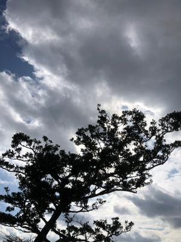
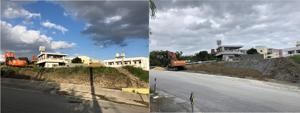

うるがいの話 ある日
最新: 水漏れ【うるがいの話 ある日】とは 一日だけのプログです
『うるがいの話』の最新一日だけのプログで、通信料が少なく経済的だ。カニの画像をクリックすると全ての日付が載る『うるがいの話』サイトを表示します
|
|
【うるがいの話】 うるがい(ｳﾙｶﾞｲ urugai)とは、『もずくがに』の名前でとても大きくなります。 |
|---|---|
|
|
【カミマヤーの話】 猫のことを方言でマヤーといいます。カミマヤー（kamimayaa）とは、神の猫のことです。 |
|
【たながぁの音楽】 たながぁ（ﾀﾅｶﾞｰtanagaa）とは手長えびのことで、何種類かあり大きいのは車 エビぐらいになります。 |

|
【ぶながぁの話】 ぶながー(bunagaa)とは、赤い髪の毛、赤い身体、そして身長は１ｍ２０ｃｍ ぐらい、川の蟹を食べているの目撃された。場所は沖縄県国頭郡大宜味村のと ある村僕の隣近所に住んでいる爺さんから、聞いた話です。 |
|
|
【ギーマの話】 ギーマ(giima)とは、山原の里山に咲くスズランに似た、 花を付けます。実は食べられます、 気が付くと口の周りが紫になっています。 |
2022年02月27日 (日）水漏れ
15:13
 
子供の軽自動車の助手席に水が溜まるので、ダイハツの販売店にみてもらこと
にした。カローラも同じ現象があり、この場合は１時間で解決した（ゴミが排
水路に詰まっていた）が、２０１１年に購入したミラは車体を解体しないとい
けないらしく、１週間以上もかかる可能性があるとこと。ん－、これ以上時間
と費用をかけてもと、馴染みの店長としばらく黙る。根本処置する価値がある
かと思うと・・・、それでは座席下の水を抜く栓（３センチ程の丸いゴムパッ
ト）を取りましょうと、応急処置をしてくれた。ただ、根本的ではないのでど
うなるだろうか、大雨だとまた水はたまるでしょうと言っていた。ま、仕方な
いかとダイハツを後にした。
１５時０６分 ビットコインの総資産 ￥１２、９４３↑